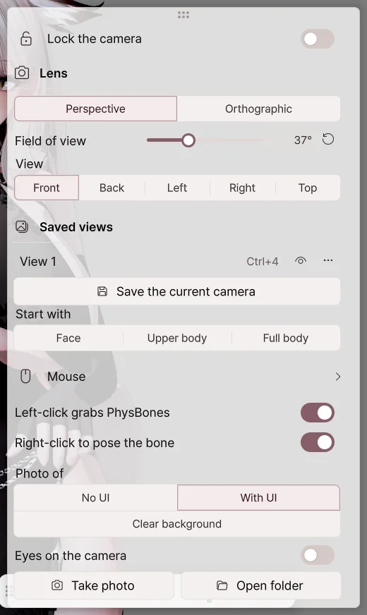

Getting Started
Start by loading an avatar, connecting your tracking devices, then setting up your broadcast video output.
Installing and Running
- Receive the Avatar Live ZIP file from your BOOTH purchase history.
- Extract all files to the desired folder.
- Run
AvatarLive.exeinside the folder. - On the product activation screen, enter the information provided when you made the purchase and press Activate.
Windows 10 / 11 64-bit and a graphics card that supports DirectX 11 are required. Prepare a webcam to track face and hand movements, and a microphone to move the mouth with your voice.
1. Open Avatar

- Click 'Open Avatar' or drag the file into the window.
- Select the character to use from the avatar list.
- Click Start in Avatar Live. When the scene list appears, select the scene you want to use.
| File type | How to use it |
|---|---|
.vavatar |
Open the file directly. |
.vrm |
Loads as is. Supports VRM 0.x and 1.0. |
| Unity Avatar Project | After creating a .vavatar with Avatar Exporter, import it. |
2. Connecting My Movements

- Press the device on the left.
- Select the camera you want to use from the webcam list and turn on the switch to the right of the title.
- Face the screen straight on and press front calibration.
- To move your mouth with your voice, also select a microphone and turn on the switch.
If you are using an iPhone or an external tracker, check Devices for connection methods.
3. Setting Background and Composition

- Outfit & expression: Choose from the left menu.
- Face & hand movements: Adjust in Motion.
- Background & lighting: Choose in Studio.
- Composition: Select face, upper body, or full body from the camera toolbar at the bottom.
Press F1 to hide the menu and view only the avatar. Press again to bring the menu back.
4. Connecting to Broadcasting Software
| Purpose | Where to Open |
|---|---|
| Insert avatar into OBS on this PC | Spout2 Connection |
| Send video to OBS on another PC | NDI Connection |
| Use as camera on Discord or Zoom | Virtual Camera |
| Share games and avatars together | Screen Sharing |
| Broadcast together with a friend's avatar | Remote Collaboration |
| Make the avatar react to viewer events | Broadcast |
Before starting a broadcast, check the actual video on OBS or the side receiving the shared screen. The layout of your work screen and the broadcast camera may differ.
Export avatar
Opening an avatar in a Unity project in Avatar Live.vavatarCreate it as a file. already.vavatarme.vrmIf there is a fileOpen AvatarPlease skip to .
Install Exporter
- Press the button below to add the repository to VCC or ALCOM. Confirm the add in the window that opens.
- Add Curious Bobby - Avatar Exporter to your avatar project.
- Open the project in Unity.
If the button doesn't open VCC, copy the address below and paste it in Settings → Packages → Add Repository.
https://raw.githubusercontent.com/zzubi-works/avatar-exporter/main/index.json
If you received a .unitypackage, import it in Unity with Assets → Import Package → Custom Package….
Create an avatar file
- Open Curious Bobby → Avatar Exporter at the top of Unity.
- Drag the Hierarchy's avatar into the avatar box.
- Set a display name and save folder.
- Click Export .vavatar.
- Once complete, click View File to view the resulting file.
- Load that file in Open Avatar in Avatar Live.
| item | What happens if I change it? |
|---|---|
| avatar | Select the character you want to export. |
| name to display | This will be the name you see in the list in Avatar Live. |
| facial expression clip | Includes the selected facial expression animation. You can export it even if you don't have it. |
| storage folder | completed.vavatarThe folder in which to place the files. |
| Export .vavatar | Create a file with the avatar of your choice. |
| View files | Open the folder containing the completed file. |
When modifying the avatar
In Unity, modify the clothing, hair, etc. and then export the same avatar again. Any changes to appearance will be reflected when you load a new file in Avatar Live.
When export does not work
- Unity checks that there are no errors in the avatar itself.
- Check which authoring tool and exporter you are using and try exporting again.
- If the file exists, but some parts are pink or disappeared, check the material/shader of the original project and the on status of the corresponding parts.
The permitted scope for broadcasting and sharing of avatars, costumes, and props follows the terms and conditions of each producer.Content Terms of UseCheck out .
Avatar Library
Register your avatar file, select the character you want to use and the starting scene.
splash screen
| Button/Item | What happens when I press it? |
|---|---|
| Open Avatar | .vavataror.vrmAdd files to the list. You can also drag and drop files into the window. |
| recent | Shows recently used avatars. |
| folder | Shows files in the specified avatar folder. |
| brought | Shows avatars imported into the library. |
| Avatar Thumbnail | Choose a character to start with. |
| set as default | Choose the character you will use when starting as the default avatar. |
| Preview | Check the appearance of the selected character. |
| scene list | Choose a stage setup to start with. |
| Start Avatar Live | Opens the main screen with the selected avatar and scene. |
Choose a device to start with

- Camera: Turn on the switch on the right to use the webcam selected at startup.
- Microphone: When on, lip sync to the selected microphone at startup.
- Face/Hands: Choose how you want to track each part. After running it, you can change it on your device as well.
Avatar to use for next launch
| Startup Settings | Next time you run |
|---|---|
| Ask every time | Choose your avatar directly from the start screen. |
| last avatar | You start with the avatar you used just before. |
| default avatar | Start with the default avatar. |
Change while running
- Tap your avatar name in the upper left.
- Select the avatar you want to replace from the list.
- New files are imported as additional avatar files.
Use this list to replace an existing avatar. Adding an avatar to place more characters in a scene isstudioIt is a separate feature of .
When things don't start well
If you run the program while holding down Shift, you can use Safe Startup, which does not turn on the webcam and microphone. After checking the device issue, try turning it on on your devices one by one.
Main screen
Select settings on the left and adjust them while viewing the avatar in the center.
left menu
| menu | What you can do here |
|---|---|
| Avatar Menu | Apply clothing, facial expressions, hand gestures and saved postures. |
| Devices | Connect the webcam, microphone, iPhone, and tracker. |
| Motion | Controls the size and smoothness of movement of the face, body, and hands. |
| Studio | Place the background, lighting, room, props, avatars and shooting cameras, and take photos and recordings. |
| Output | Connect to OBS, the virtual camera and screen sharing. |
| Broadcast | Make the avatar react to Twitch, CHZZK, SOOP and Discord events, and open a remote collaboration session. See Broadcast for details. |
| Settings | Change windows, performance, language, shortcuts, and updates. |
Using the Settings panel
- Card title: Tap to expand or collapse detailed settings.
- Switch: Turn the function on or off. This is separate from expanding the title.
- Pin: Prevents the settings panel from collapsing when you press outside the panel.
- Number: Enter it directly or use the slider next to it.
- Drag card title: Move frequently used cards up.
- Magnifying glass at top: Search for the setting name and tap the result to jump to it.
camera toolbar

| item | What changes |
|---|---|
| Face, upper body, whole body | The selected avatar is displayed on the screen at the appropriate size. |
| saved view | Return to the saved location and direction. |
| Save view | Save the composition you are currently viewing. |
| camera lock | Lock the composition so that it does not change with the mouse. The avatar keeps moving. |
| viewing angle | Lowering it makes the avatar appear larger, and raising it makes the surroundings appear wider. |
| Fixed/Free/Orbit | Change the way you move the mouse around the work screen. |
Turn the wheel on the settings panel to scroll through the settings. The camera distance changes as you rotate the avatar in the visible area.
Work screen and transmission screen
| screen | viewer | If you move |
|---|---|---|
| scene view | The work screen I edit | The timing of my work changes. If a scene view is being broadcast, the broadcast will also change accordingly. |
| studio camera | Viewer screen for selected shooting camera | The composition changes depending on the settings of the camera. |
To edit lighting or props while maintaining the broadcast compositionstudio cameraSelect as the transmission target.
Frequently used operations
| operation | result |
|---|---|
| F1 | Hide the menu. Press again to display. |
| Ctrl+Z | Reverses supported edit operations one step. |
| Reset top | Restore tracking, hand posture, and physical movements. |
| bottom left power | Exit the program. |
Reset All, which changes clothing or even location, has a larger scope of application. If your hair is only briefly tangled, use a regular reset first.
Editions and Exit
Basic is for personal/private use, Pro is for broadcasting, video sharing, and commercial use. Check the features by edition for the functions you need.
Close the program with the power button at the bottom left. If the window's X button is set to hide to the tray, the broadcast will continue. You can change the X button behavior in Settings → Window.